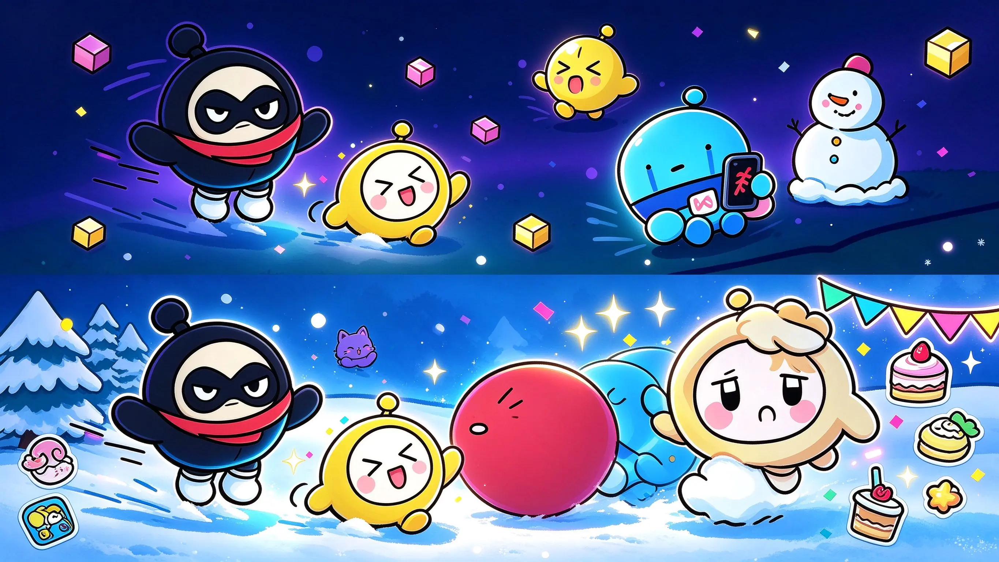
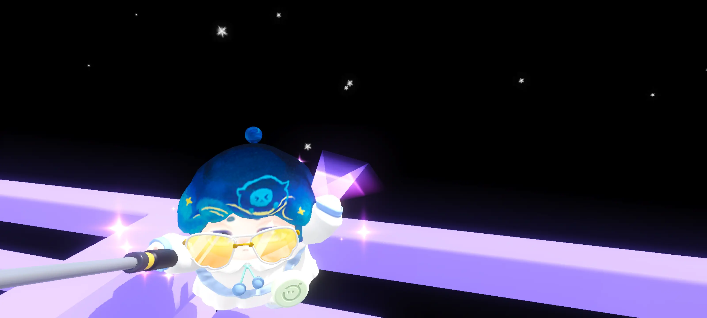

一只爱玩蛋仔、爱折腾数码、也爱剪视频的东北蛋蛋。这里是蛋小黄、32 赛季整理和一堆高光五杀的老窝。

蛋仔星球 EGGY · 皮蛋一枚不按常理出牌的蛋蛋，白天折腾虚拟机，晚上开蛋仔，一有空就剪视频。

从小在东北长大，骨子里带点"带派"的劲儿。喜欢一切圆滚滚的东西，所以成了蛋仔的死忠，也给自己起了个蛋系花名——皮蛋。
是个虚拟机爱好者，从 Windows 到 PidanUI 再到复古系统都爱折腾。创作上喜欢做蛋仔视频。
这座星球的核心地带——关于蛋小黄、赛季、五杀和所有蛋仔的一切。
我的专属蛋仔形象，黄澄澄圆滚滚，是这座星球的原住民，也是所有创作里最常出镜的主角。
星球常住居民把蛋仔派对的全部 32 个赛季做了一份完整梳理，赛季脉络、主题、高光一次看清，方便查证和怀旧。
32 赛季 · 一站式整理在蛋仔岛上攒下的各种五杀名场面，剪成一段段短视频记录，看一遍爽一遍。
蛋仔五杀合集PidanUI 的发起人之一，参与 PidanUI 的设计与开发讨论。
UI 灵感实验关注的绝版皮肤之一，念念不忘，记录那份"错过就再也见不到"的执念。
绝版皮肤执念把蛋仔 IP 的梗融进日常表达，做蛋仔化内容、角色小剧场，让蛋仔的快乐传染给更多人。
蛋仔化创作者既能窝在终端里折腾系统，也能上岛开蛋仔、开拍视频，多元才是我的底色。
Python、Linux、Chrome 开发、VNC 远程运维，全栈折腾一把抓。
Windows PE、Wine、J2ME 模拟器、Grub/EFI，复古硬核不迷路。
分镜、运镜、五杀切片、产品解析动画，电影级脑洞随手就来。
舞萌 DX 选手，沉迷节奏与判定，蛋仔之外的另一片快乐。
把喜欢的东西做成看得见的东西，是我最上瘾的事。
在蛋仔岛上的高光切片，节奏带感，看一遍爽一遍。
视频用物理解构与重组的镜头语言，把产品拆给你看。
动画把蛋仔味融进界面设计，探索 IP 与 UI 的化学反应。
设计